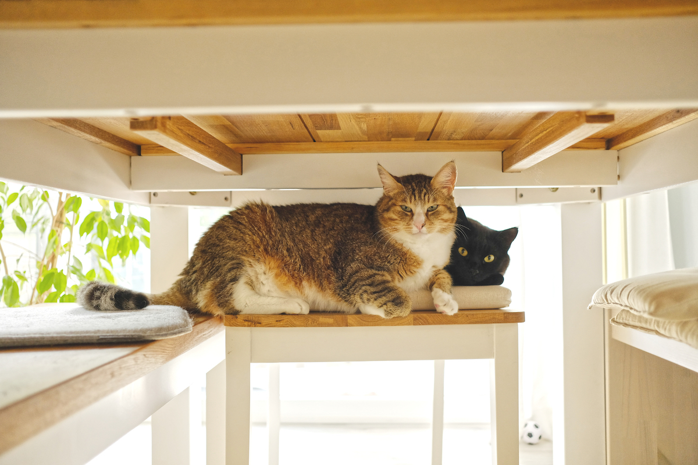

08 March 2022
Even if and especially when
Waking up today to a very unusual Hamburg, with blue skies and absolutely no clouds, I went on doing my morning meditation and routines; stretching, making breakfast and setting up my laptop to start another working day. A typical Tuesday, I would normally say, but this one was no ordinary Tuesday.
When I returned from Brazil, a little over a month ago, I was planning on spending at least the next 12 months in Germany in order to tie up some loose ends, but little did I know how much things would change in the course of only a few weeks. From quitting my 8 year long job to selling almost all my belongings, from giving up a great housing opportunity to go live in the unknowns of this world.
To quit my job and go travelling - this phrase has been in my mind for a long time but until a few weeks ago it only sounded like just another of those daydreams we go through in our contemplative times. This time, after looking at what point of my life I am in, I concluded that there would be no better time than now to finally step up, two feet first, into this dream of mine and turn it into reality.
With a 42 litre backpack as the container to all my belongings, a one way ticket out of the country and a beautiful feeling of freedom and lightness, I feel ready to close my house’s door one last time and step into the unknown.
I want to see mountains again, Gandalf, mountains…
•
In memory of the most clever, crazy and sweet feline I had the pleasure to share a home with. Rest easy in cat heaven, Pumpkin.
